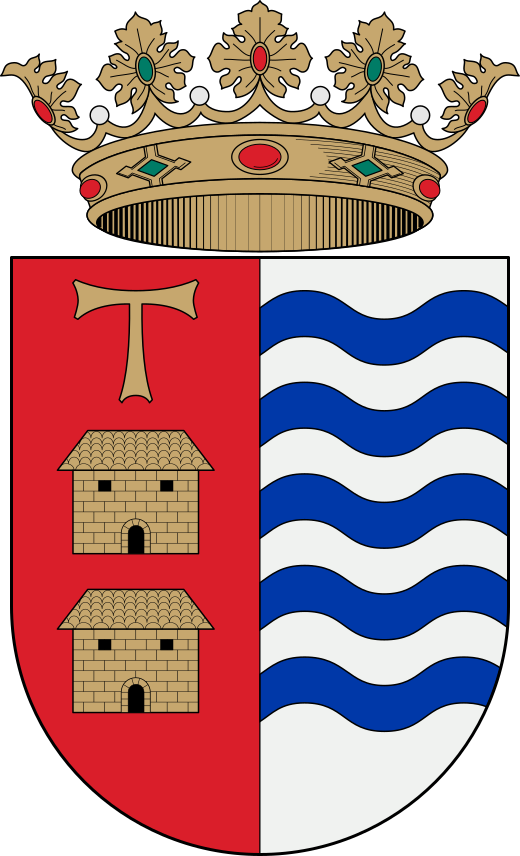

Taller práctico · abierto a todo el mundo
Cualquiera
puede salvar
una vida

Aprende a reconocer una parada cardiaca y usar el desfibrilador. No hace falta ser sanitario ni saber nada de antes. Impartido por profesionales sanitarios de nuestro centro de salud
22Julio
Miércoles, 19:00 h
Salón Multiusos (Casas Bajas)

Ayuntamiento de Casas Bajas
Rincón de Ademuz · Valencia